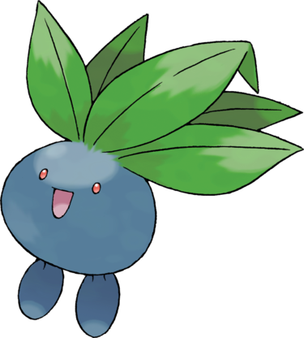

Mystherbe est un petit Pokémon rond de couleur bleu foncé disposant de petits yeux rouges, d'une bouche et d'une paire de pieds. Une touffe de feuilles vertes trône également sur sa tête. Ce Pokémon est inspiré d'un légume-racine, mais aussi de la mandragore car d après certaines descriptions du Pokédex, Mystherbe se mettrait à hurler lorsque lon tente de le retirer du sol.